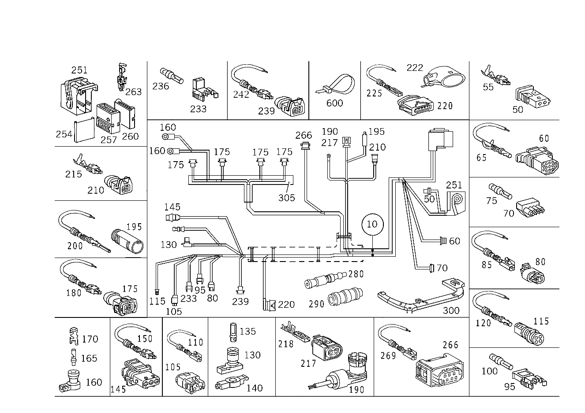

| № | Артикул | Название | Кол. | Примечание | Ограничение |
|---|---|---|---|---|---|
| 10 | A 170 540 43 05 | Жгут электропроводки (LEITUNGSSATZ) | 1 | ЖГУТ ЭЛЕКТРОПРОВОДКИ ДВИГАТЕЛЯ Рулевое управление: Влево | -923 |
| 10 | A 170 540 80 05 | Жгут электропроводки (LEITUNGSSATZ) | 1 | ЖГУТ ЭЛЕКТРОПРОВОДКИ ДВИГАТЕЛЯ Рулевое управление: Влево | -923 |
| 10 | A 170 540 45 05 | Жгут электропроводки (LEITUNGSSATZ) | 1 | ЖГУТ ЭЛЕКТРОПРОВОДКИ ДВИГАТЕЛЯ Рулевое управление: Вправо | |
| 10 | A 170 540 81 05 | Жгут электропроводки (LEITUNGSSATZ) | 1 | ЖГУТ ЭЛЕКТРОПРОВОДКИ ДВИГАТЕЛЯ Рулевое управление: Вправо [402] БОЛЬШЕ НЕ ПОСТАВЛЯЕТСЯ | |
| 10 | A 170 540 46 05 | Жгут электропроводки (LEITUNGSSATZ) | 1 | ЖГУТ ЭЛЕКТРОПРОВОДКИ ДВИГАТЕЛЯ Рулевое управление: Влево | 923 |
| 10 | A 170 540 82 05 | Жгут электропроводки (LEITUNGSSATZ) | 1 | ЖГУТ ЭЛЕКТРОПРОВОДКИ ДВИГАТЕЛЯ Рулевое управление: Влево | 923 |
| 50 | A 031 545 32 28 | - Корпус штекера (STECKERGEHAEUSE) | 1 | ТОЧКА РАЗЪЕДИНЕНИЯ; 2\-PIN JPT2.8 | |
| 55 | A 003 545 19 26 | - Контактная пружина | - | 0.5 MM2 JPT | |
| 55 | A 006 545 89 26 | - ПРУЖИНА КОНТАКТНАЯ | - | ||
| 55 | A 011 545 81 26 | - Контактная пружина (FEDERSTECKER) | 1 | 0.5 \-1.0 MM2; 0.5\-1.0 MM2 JPT | |
| 60 | A 029 545 11 28 | - Сцепление, механическое (KUPPLUNG, MECHANISCH) | 1 | РАЗЪЕМ ДВИГ./КУЗОВ; 13\-PIN LKS1.5 | |
| 65 | A 008 545 76 26 | - Контактная втулка (KONTAKTBUCHSE) | - | 0.75\-1.0 MM2 LKS1.5 | |
| 65 | A 000 540 59 05 | - Электрический жгут (ELEKTRISCHER LEITUNGSSATZ) | NB | РЕМОНТНОЕ РЕШЕНИЕ ДЛЯ КОНТАКТОВ 1.0 MM2; 1.0 MM2 LKS1.5 [774] СОЕДИНИТЕЛИ ДОЛЖНЫ БЫТЬ ЗАКАЗАНЫ В СООТВЕТСТВИИ С ОБЩИМ СЕЧЕНИЕМ ПРОВОДОВ. РУКОВОДСТВО ПО РЕМОНТУ СМ. WIS КОНЦЕВ. СПАЕЧНЫЕ ГИЛЬЗЫ: A 001 546 99 41 ЗЕЛЁНЫЙ 0,7-2,4 MM2 A 002 546 00 41 КРАСНЫЙ 2,0 - 4,0 MM2 A 002 546 01 41 СИНИЙ 3,5 - 8,0 MM2 A 002 546 11 41 ЖЁЛТЫЙ 7,5 - 12,0 MM2 СОЕДИНИТЕЛИ В СТЫК: A 002 546 13 41 0,5 MM2 A 002 546 14 41 0,8 MM2 A 002 546 15 41 1,3 MM2 A 002 546 16 41 2,0 MM2 | |
| 65 | A 008 545 75 26 | - Контактная втулка (KONTAKTBUCHSE) | - | 1.5\-2.5 MM2 LKS1.5 | |
| 65 | A 000 540 60 05 | - Электрический жгут (ELEKTRISCHER LEITUNGSSATZ) | NB | РЕМОНТНОЕ РЕШЕНИЕ ДЛЯ КОНТАКТОВ 2.5 MM2; 2.5 MM2 LKS [774] СОЕДИНИТЕЛИ ДОЛЖНЫ БЫТЬ ЗАКАЗАНЫ В СООТВЕТСТВИИ С ОБЩИМ СЕЧЕНИЕМ ПРОВОДОВ. РУКОВОДСТВО ПО РЕМОНТУ СМ. WIS КОНЦЕВ. СПАЕЧНЫЕ ГИЛЬЗЫ: A 001 546 99 41 ЗЕЛЁНЫЙ 0,7-2,4 MM2 A 002 546 00 41 КРАСНЫЙ 2,0 - 4,0 MM2 A 002 546 01 41 СИНИЙ 3,5 - 8,0 MM2 A 002 546 11 41 ЖЁЛТЫЙ 7,5 - 12,0 MM2 СОЕДИНИТЕЛИ В СТЫК: A 002 546 13 41 0,5 MM2 A 002 546 14 41 0,8 MM2 A 002 546 15 41 1,3 MM2 A 002 546 16 41 2,0 MM2 | |
| 70 | A 027 545 74 28 | - Корпус штекерной втулки (STECKHUELSENGEHAEUSE) | 1 | БЛОК РЕЛЕ; 4\-PIN | |
| 75 | A 002 545 99 26 | - Контактная втулка (KONTAKTBUCHSE) | 2 | 0.35\-2.5 MM2 RK2.5 | |
| 80 | A 210 540 20 81 | - Корпус штекерной втулки (STECKHUELSENGEHAEUSE) | 1 | ДАТЧИК ТЕМПЕРАТУРЫ ОХЛАЖДАЮЩЕЙ ЖИДКОСТИ; 2\-PIN MQS | |
| 85 | A 008 545 63 26 | - Контактная втулка (KONTAKTBUCHSE) | - | 0.5\-0.75 MM2 MQS ELA | |
| 85 | A 000 540 25 05 | - Электрический провод (ELEKTRISCHE LEITUNG) | 2 | РЕМОНТНОЕ РЕШЕНИЕ ДЛЯ КОНТАКТОВ 0.5 MM2; 0.5 MM2 MQS [774] СОЕДИНИТЕЛИ ДОЛЖНЫ БЫТЬ ЗАКАЗАНЫ В СООТВЕТСТВИИ С ОБЩИМ СЕЧЕНИЕМ ПРОВОДОВ. РУКОВОДСТВО ПО РЕМОНТУ СМ. WIS КОНЦЕВ. СПАЕЧНЫЕ ГИЛЬЗЫ: A 001 546 99 41 ЗЕЛЁНЫЙ 0,7-2,4 MM2 A 002 546 00 41 КРАСНЫЙ 2,0 - 4,0 MM2 A 002 546 01 41 СИНИЙ 3,5 - 8,0 MM2 A 002 546 11 41 ЖЁЛТЫЙ 7,5 - 12,0 MM2 СОЕДИНИТЕЛИ В СТЫК: A 002 546 13 41 0,5 MM2 A 002 546 14 41 0,8 MM2 A 002 546 15 41 1,3 MM2 A 002 546 16 41 2,0 MM2 | |
| 95 | A 012 545 04 28 | - Разъем, электрический (ELEKTRISCHE KUPPLUNG) | 1 | ИСПОЛН.ЭЛЕКТРОМАГНИТ РЕГУЛ. ФАЗ ГАЗОРАСПР.; 2\-PIN RK4 | |
| 100 | A 001 545 44 26 | - Контактная втулка (KONTAKTBUCHSE) | 2 | 4.0mm2; 0.35\-6.0 MM2 RK4.0 | |
| 105 | A 210 540 21 81 | - Сцепление, механическое (KUPPLUNG, MECHANISCH) | 1 | 3\-PIN MQS | |
| 110 | A 008 545 63 26 | - Контактная втулка (KONTAKTBUCHSE) | - | 0.5\-0.75 MM2 MQS ELA | |
| 110 | A 000 540 25 05 | - Электрический провод (ELEKTRISCHE LEITUNG) | 3 | РЕМОНТНОЕ РЕШЕНИЕ ДЛЯ КОНТАКТОВ 0.5 MM32; 0.5 MM2 MQS [774] СОЕДИНИТЕЛИ ДОЛЖНЫ БЫТЬ ЗАКАЗАНЫ В СООТВЕТСТВИИ С ОБЩИМ СЕЧЕНИЕМ ПРОВОДОВ. РУКОВОДСТВО ПО РЕМОНТУ СМ. WIS КОНЦЕВ. СПАЕЧНЫЕ ГИЛЬЗЫ: A 001 546 99 41 ЗЕЛЁНЫЙ 0,7-2,4 MM2 A 002 546 00 41 КРАСНЫЙ 2,0 - 4,0 MM2 A 002 546 01 41 СИНИЙ 3,5 - 8,0 MM2 A 002 546 11 41 ЖЁЛТЫЙ 7,5 - 12,0 MM2 СОЕДИНИТЕЛИ В СТЫК: A 002 546 13 41 0,5 MM2 A 002 546 14 41 0,8 MM2 A 002 546 15 41 1,3 MM2 A 002 546 16 41 2,0 MM2 | |
| 115 | A 001 540 23 81 | - Сцепление, механическое (KUPPLUNG, MECHANISCH) | 1 | ЭЛЕКТРОМАГНИТНАЯ МУФТА; 4\-PIN LKS 1.5 | |
| 120 | A 009 545 01 26 | - КОНТАКТНАЯ ВТУЛКА | - | 1.5\-2.5mm2 | |
| 120 | A 000 540 43 05 | - Электрический жгут (ELEKTRISCHER LEITUNGSSATZ) | 2 | РЕМОНТНОЕ РЕШЕНИЕ ДЛЯ КОНТАКТОВ 2.5 MM2; 2.5 MM2 LKS [774] СОЕДИНИТЕЛИ ДОЛЖНЫ БЫТЬ ЗАКАЗАНЫ В СООТВЕТСТВИИ С ОБЩИМ СЕЧЕНИЕМ ПРОВОДОВ. РУКОВОДСТВО ПО РЕМОНТУ СМ. WIS КОНЦЕВ. СПАЕЧНЫЕ ГИЛЬЗЫ: A 001 546 99 41 ЗЕЛЁНЫЙ 0,7-2,4 MM2 A 002 546 00 41 КРАСНЫЙ 2,0 - 4,0 MM2 A 002 546 01 41 СИНИЙ 3,5 - 8,0 MM2 A 002 546 11 41 ЖЁЛТЫЙ 7,5 - 12,0 MM2 СОЕДИНИТЕЛИ В СТЫК: A 002 546 13 41 0,5 MM2 A 002 546 14 41 0,8 MM2 A 002 546 15 41 1,3 MM2 A 002 546 16 41 2,0 MM2 | |
| 130 | A 014 545 07 28 | - Корпус штекерной втулки (STECKHUELSENGEHAEUSE) | 1 | ИНДИКАТОР УРОВНЯ МАСЛА; 1\-PIN | |
| 135 | A 003 545 26 26 | - Контактная втулка (KONTAKTBUCHSE) | 1 | 0.35\-4.0 MM2 RK4 | |
| 140 | A 008 997 07 81 | - втулка (TUELLE) | 1 | ||
| 145 | A 210 540 80 81 | - Корпус штекерной втулки (STECKHUELSENGEHAEUSE) | 1 | ДАТЧИК ПОЛОЖЕНИЯ РАСПРЕД.ВАЛА; 3\-PIN | |
| 150 | A 000 540 46 15 | - Контактная пружина (FEDERSTECKER) | - | 0.5\-1.0 MM2 JPT | |
| 150 | A 000 540 27 05 | - Электрический провод (ELEKTRISCHE LEITUNG) | 3 | РЕМОНТНОЕ РЕШЕНИЕ ДЛЯ КОНТАКТОВ 1.0 MM2; 0.5\-1.00 MM2 JPT [774] СОЕДИНИТЕЛИ ДОЛЖНЫ БЫТЬ ЗАКАЗАНЫ В СООТВЕТСТВИИ С ОБЩИМ СЕЧЕНИЕМ ПРОВОДОВ. РУКОВОДСТВО ПО РЕМОНТУ СМ. WIS КОНЦЕВ. СПАЕЧНЫЕ ГИЛЬЗЫ: A 001 546 99 41 ЗЕЛЁНЫЙ 0,7-2,4 MM2 A 002 546 00 41 КРАСНЫЙ 2,0 - 4,0 MM2 A 002 546 01 41 СИНИЙ 3,5 - 8,0 MM2 A 002 546 11 41 ЖЁЛТЫЙ 7,5 - 12,0 MM2 СОЕДИНИТЕЛИ В СТЫК: A 002 546 13 41 0,5 MM2 A 002 546 14 41 0,8 MM2 A 002 546 15 41 1,3 MM2 A 002 546 16 41 2,0 MM2 | |
| 160 | A 202 540 60 81 | - Корпус соединителя (KUPPLUNGSGEHAEUSE, EL.) | 2 | КАТУШКА ЗАЖИГ. | |
| 165 | A 002 545 99 26 | - Контактная втулка (KONTAKTBUCHSE) | 2 | 0.35\-2.5 MM2 RK2.5 | |
| 170 | A 004 545 09 26 | - Контактная втулка (KONTAKTHUELSE) | 2 | ||
| 175 | A 140 545 35 28 | - Корпус штекерной втулки (STECKHUELSENGEHAEUSE) | 4 | ФОРСУНКА; 2 PIN JPT | |
| 180 | A 000 540 46 15 | - Контактная пружина (FEDERSTECKER) | - | 0.5\-1.0 MM2 JPT | |
| 180 | A 000 540 27 05 | - Электрический провод (ELEKTRISCHE LEITUNG) | 8 | РЕМОНТНОЕ РЕШЕНИЕ ДЛЯ КОНТАКТОВ 1.0 MM2; 0.5\-1.00 MM2 JPT [774] СОЕДИНИТЕЛИ ДОЛЖНЫ БЫТЬ ЗАКАЗАНЫ В СООТВЕТСТВИИ С ОБЩИМ СЕЧЕНИЕМ ПРОВОДОВ. РУКОВОДСТВО ПО РЕМОНТУ СМ. WIS КОНЦЕВ. СПАЕЧНЫЕ ГИЛЬЗЫ: A 001 546 99 41 ЗЕЛЁНЫЙ 0,7-2,4 MM2 A 002 546 00 41 КРАСНЫЙ 2,0 - 4,0 MM2 A 002 546 01 41 СИНИЙ 3,5 - 8,0 MM2 A 002 546 11 41 ЖЁЛТЫЙ 7,5 - 12,0 MM2 СОЕДИНИТЕЛИ В СТЫК: A 002 546 13 41 0,5 MM2 A 002 546 14 41 0,8 MM2 A 002 546 15 41 1,3 MM2 A 002 546 16 41 2,0 MM2 | |
| 190 | A 129 540 22 81 | - Электрический провод (ELEKTRISCHE LEITUNG) | 1 | ДАТЧИК ПОЛОЖЕНИЯ КОЛЕН.ВАЛА | |
| 195 | A 001 540 24 81 | - Штекер (STECKER) | 1 | КИСЛОРОДНЫЙ ДАТЧИК | |
| 200 | A 032 545 54 28 | - Контактный стержень (KONTAKTSTIFT) | - | 0.5\-1.0 mm2 | |
| 200 | A 000 540 42 05 | - Электрический провод (ELEKTRISCHE LEITUNG) | 4 | РЕМОНТНОЕ РЕШЕНИЕ ДЛЯ КОНТАКТОВ 1.0 MM2; 1.0 MM2 LKS 1.5 [774] СОЕДИНИТЕЛИ ДОЛЖНЫ БЫТЬ ЗАКАЗАНЫ В СООТВЕТСТВИИ С ОБЩИМ СЕЧЕНИЕМ ПРОВОДОВ. РУКОВОДСТВО ПО РЕМОНТУ СМ. WIS КОНЦЕВ. СПАЕЧНЫЕ ГИЛЬЗЫ: A 001 546 99 41 ЗЕЛЁНЫЙ 0,7-2,4 MM2 A 002 546 00 41 КРАСНЫЙ 2,0 - 4,0 MM2 A 002 546 01 41 СИНИЙ 3,5 - 8,0 MM2 A 002 546 11 41 ЖЁЛТЫЙ 7,5 - 12,0 MM2 СОЕДИНИТЕЛИ В СТЫК: A 002 546 13 41 0,5 MM2 A 002 546 14 41 0,8 MM2 A 002 546 15 41 1,3 MM2 A 002 546 16 41 2,0 MM2 | |
| 210 | A 094 545 49 01 | - Корпус штекера (STECKERGEHAEUSE) | 1 | ДАТЧИК ДЕТОНАЦ. СГОРАНИЯ; 2\-PIN | |
| 215 | A 006 545 89 26 | - ПРУЖИНА КОНТАКТНАЯ | - | ||
| 215 | A 011 545 81 26 | - Контактная пружина (FEDERSTECKER) | 2 | 0.5 \-1.0 MM2; 0.5\-1.0 MM2 JPT | |
| 217 | A 168 545 30 28 | - Корпус штекерной втулки (STECKHUELSENGEHAEUSE) | 1 | ДАТЧИК ПОЛОЖЕНИЯ КОЛЕН.ВАЛА; 2\-PIN COD.B;SLK2.8 | |
| 218 | A 013 545 14 26 | - Контактная пружина (FEDERSTECKER) | 2 | 0.2 \- 0.5 MM2; 0.22\-0.35 MM2 SLK2.8 | |
| 220 | A 220 545 46 28 | - Штекер (STECKER) | 1 | РАСХОДОМЕР ВОЗДУХА; 5\-PIN SLK2.8 | |
| 222 | A 000 545 31 84 | - Защитный колпачок (ABDECKKAPPE) | 1 | РАСХОДОМЕР ВОЗДУХА; 5\-PIN | |
| 225 | A 009 545 81 26 | - Контактная втулка (KONTAKTBUCHSE) | - | 0.5\-0.75 MM2 SLK2.8 | |
| 225 | A 000 540 38 05 | - Электрический провод (ELEKTRISCHE LEITUNG) | 5 | РЕМОНТНОЕ РЕШЕНИЕ ДЛЯ КОНТАКТОВ 0.75mm2; 0.75 MM2 SLK2.8 [774] СОЕДИНИТЕЛИ ДОЛЖНЫ БЫТЬ ЗАКАЗАНЫ В СООТВЕТСТВИИ С ОБЩИМ СЕЧЕНИЕМ ПРОВОДОВ. РУКОВОДСТВО ПО РЕМОНТУ СМ. WIS КОНЦЕВ. СПАЕЧНЫЕ ГИЛЬЗЫ: A 001 546 99 41 ЗЕЛЁНЫЙ 0,7-2,4 MM2 A 002 546 00 41 КРАСНЫЙ 2,0 - 4,0 MM2 A 002 546 01 41 СИНИЙ 3,5 - 8,0 MM2 A 002 546 11 41 ЖЁЛТЫЙ 7,5 - 12,0 MM2 СОЕДИНИТЕЛИ В СТЫК: A 002 546 13 41 0,5 MM2 A 002 546 14 41 0,8 MM2 A 002 546 15 41 1,3 MM2 A 002 546 16 41 2,0 MM2 | |
| 233 | A 011 545 71 28 | - Корпус штекерной втулки (STECKHUELSENGEHAEUSE) | 1 | ВОЗДУШНЫЙ НАСОС; 2\-PIN | 923 |
| 236 | A 003 545 26 26 | - Контактная втулка (KONTAKTBUCHSE) | 2 | 0.35\-4.0 MM2 RK4 | 923 |
| 239 | A 005 545 66 26 | - Корпус штекерной втулки (STECKHUELSENGEHAEUSE) | 1 | ВПУСК. КОЛЛЕКТОР, ДАТЧИК ДАВЛ.; 3\-PIN JPT | 923 |
| 242 | A 005 545 68 26 | - Контактная пружина | - | 0.5\-1.0 MM2 JPT2.8 | 923 |
| 242 | A 000 540 46 15 | - Контактная пружина (FEDERSTECKER) | - | 0.5\-1.0 MM2 JPT | 923 |
| 242 | A 000 540 27 05 | - Электрический провод (ELEKTRISCHE LEITUNG) | 3 | РЕМОНТНОЕ РЕШЕНИЕ ДЛЯ КОНТАКТОВ 1.0 MM2; 0.5\-1.00 MM2 JPT [774] СОЕДИНИТЕЛИ ДОЛЖНЫ БЫТЬ ЗАКАЗАНЫ В СООТВЕТСТВИИ С ОБЩИМ СЕЧЕНИЕМ ПРОВОДОВ. РУКОВОДСТВО ПО РЕМОНТУ СМ. WIS КОНЦЕВ. СПАЕЧНЫЕ ГИЛЬЗЫ: A 001 546 99 41 ЗЕЛЁНЫЙ 0,7-2,4 MM2 A 002 546 00 41 КРАСНЫЙ 2,0 - 4,0 MM2 A 002 546 01 41 СИНИЙ 3,5 - 8,0 MM2 A 002 546 11 41 ЖЁЛТЫЙ 7,5 - 12,0 MM2 СОЕДИНИТЕЛИ В СТЫК: A 002 546 13 41 0,5 MM2 A 002 546 14 41 0,8 MM2 A 002 546 15 41 1,3 MM2 A 002 546 16 41 2,0 MM2 | 923 |
| 251 | A 210 545 05 30 | - Корпус (GEHAEUSE) | 1 | БЛОК УПРАВЛЕНИЯ; 21\-PIN | |
| 254 | A 001 545 13 03 | - Крышка (DECKEL) | 1 | TO 210 545 05 30 | |
| 257 | A 001 545 87 40 | - Держатель (HALTER) | 1 | TO 210 545 05 30 | |
| 260 | A 001 545 88 40 | - Держатель (HALTER) | 1 | TO 210 545 05 30 | |
| 263 | A 011 545 81 26 | - Контактная пружина (FEDERSTECKER) | NB | 0.5 \- 1.0mm2; 0.5\-1.0 MM2 JPT | |
| 263 | A 004 545 53 26 | - Контактная пружина | NB | 1.5 \- 2.5 MM2; 1.5\-2.5 MM2 JPT | |
| 266 | A 210 540 36 81 | - Сцепление, механическое (KUPPLUNG, MECHANISCH) | 1 | РЕГУЛИР. ХОЛ. ХОДА; 6\-PIN MQS | |
| 269 | A 013 545 46 26 | - Контактная втулка (KONTAKTBUCHSE) | - | 0.5\-0.75 MM2 MQS ELA | |
| 269 | A 000 540 26 05 | - Электрический провод (ELEKTRISCHE LEITUNG) | 4 | РЕМОНТНОЕ РЕШЕНИЕ ДЛЯ КОНТАКТОВ 0.75mm2; 0.75 MM2 MQS [774] СОЕДИНИТЕЛИ ДОЛЖНЫ БЫТЬ ЗАКАЗАНЫ В СООТВЕТСТВИИ С ОБЩИМ СЕЧЕНИЕМ ПРОВОДОВ. РУКОВОДСТВО ПО РЕМОНТУ СМ. WIS КОНЦЕВ. СПАЕЧНЫЕ ГИЛЬЗЫ: A 001 546 99 41 ЗЕЛЁНЫЙ 0,7-2,4 MM2 A 002 546 00 41 КРАСНЫЙ 2,0 - 4,0 MM2 A 002 546 01 41 СИНИЙ 3,5 - 8,0 MM2 A 002 546 11 41 ЖЁЛТЫЙ 7,5 - 12,0 MM2 СОЕДИНИТЕЛИ В СТЫК: A 002 546 13 41 0,5 MM2 A 002 546 14 41 0,8 MM2 A 002 546 15 41 1,3 MM2 A 002 546 16 41 2,0 MM2 | |
| 280 | A 001 546 99 41 | Соединитель проводов (LEITUNGSVERBINDER) | NB | ЗЕЛЕНЫЙ 0.7\-2.4 MM2; 0.7 \- 2.4 MM2 | |
| 280 | A 002 546 00 41 | Соединитель проводов (LEITUNGSVERBINDER) | NB | КРАСНЫЙ 2.0\-4.0 MM2; 2.0 \- 4.0 MM2 | |
| 280 | A 002 546 01 41 | Соединитель проводов (LEITUNGSVERBINDER) | NB | СИНИЙ 3.5\-8.0 MM2; 3.5 \- 8.0 MM2 | |
| 280 | A 002 546 11 41 | Соединитель проводов (LEITUNGSVERBINDER) | NB | ЖЕЛТЫЙ 7.5\-12.0 MM2; 7.5 \- 12.0 MM2 | |
| 290 | A 002 546 13 41 | Соединитель проводов (LEITUNGSVERBINDER) | NB | 0.5 MM2; 0.5 MM2 | |
| 290 | A 002 546 14 41 | Соединитель проводов (LEITUNGSVERBINDER) | NB | 0.8 MM2; 0.8 MM2 | |
| 290 | A 002 546 15 41 | Соединитель проводов (LEITUNGSVERBINDER) | NB | 1.3 MM2; 1.3 MM2 | |
| 290 | A 002 546 16 41 | Соединитель проводов (LEITUNGSVERBINDER) | NB | 2.0 MM2; 2.0 MM2 | |
| 300 | A 210 546 01 80 | Кабельная направляющая (LEITUNGFUEHRUNG) | 1 | [402] БОЛЬШЕ НЕ ПОСТАВЛЯЕТСЯ | |
| 305 | A 000 546 04 80 | Кабельная направляющая (LEITUNGFUEHRUNG) | 1 | [402] БОЛЬШЕ НЕ ПОСТАВЛЯЕТСЯ | |
| 500 | A 170 546 09 43 | Держатель | 1 | [402] БОЛЬШЕ НЕ ПОСТАВЛЯЕТСЯ | |
| 505 | A 000 546 80 43 | Держатель (HALTER) | 1 | 24X23 MM | |
| 510 | A 000 546 81 43 | Держатель (HALTER) | 1 | [402] БОЛЬШЕ НЕ ПОСТАВЛЯЕТСЯ | |
| 600 | A 001 997 83 90 | Кабельная стяжка | 1 | 4.6X279 MM | |
| 600 | A 004 997 18 90 | Кабельная стяжка | 1 | A0059971590 | 923 |
Позиций: 83 · подписано на схемах: 83 · колесо — плавный зум в курсор, перетаскивание — пан, двойной клик — зум, клик по артикулу — скопировать · наведите на строку или цифру на схеме — подсветка связки, клик — закрепить.